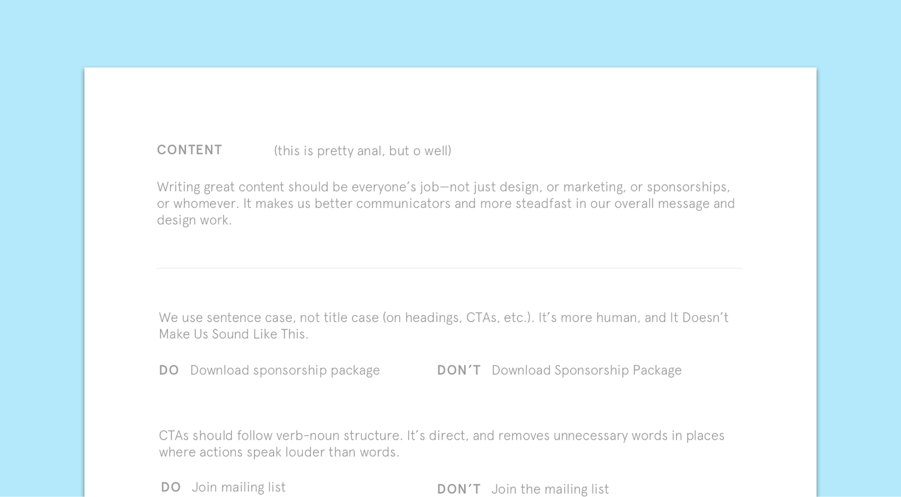
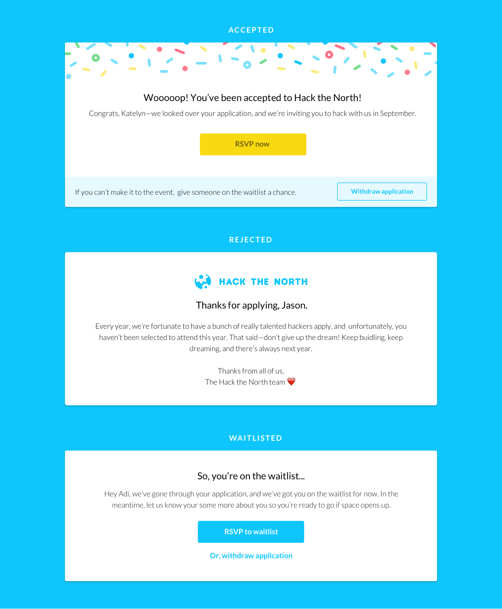
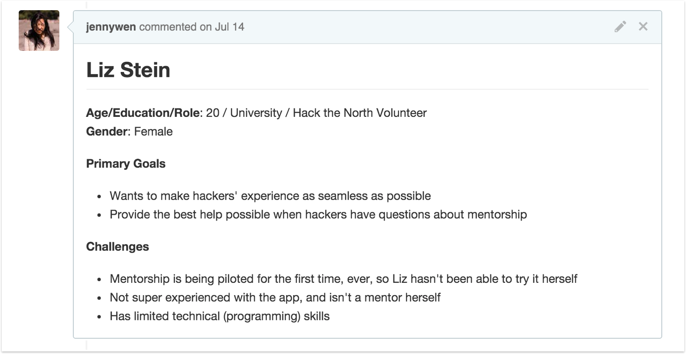
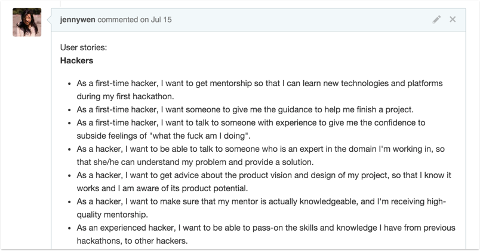
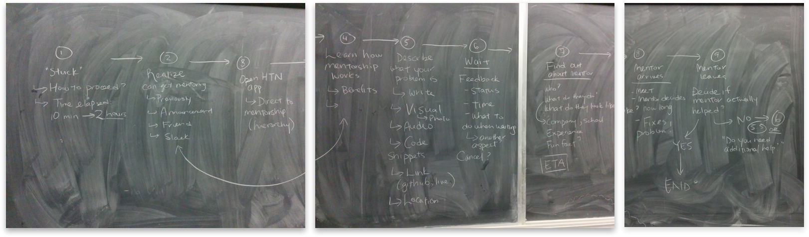

Designer + content strategist, 2015–2016
role
Designing a hackathon platform
For two years now, I've been working with the team at Hack the North to put togther Canada's largest hackathon. Despite being a physical event that only spans one weekend, the team spends most of each year planning, prepping, and building the tools we need to make the event run smoothly.
content guide
Putting content first
As we thought about evolving our brand, I wanted to think about the kinds of words our image to evoke. Reflecting on ways in which people described our event in the past, I put together a content guide in order to help people who were writing product content have a consistent voice—for both usability, and our brand.
Following Mailchimp's Voice and Tone Guide, which follow a "this but not that" format, we worked up Hack the North's voice and tone, which is something like this:
From there, it also made sense to put together a more technical content guide, that'd help us be decisive about grammar and capitalization quirks. These were some of the inconsistencies we'd noticed as different people in the organization designed, built, and marketed our main, external-facing webpage.

Content guidelines in practice
One of our most sensitive interactions with applicants is the one which we notify them of whether or not they've been accepted to attend Hack the North. Here are examples of our content guidelines in use—our voice consistent, but tone adjusted for the status of their application.

design audit
Auditing our design as a whole
In its second year, and as a part of onboarding myself onto the Hack the North team, I decided to perform an audit of all of the hackathon's existing design assets. I shared the design audit with the team in order to align on high-level goals and overall design direction before I got started on any specific tasks.

The audit was overarching and comprehensive, and included exploratory wireframes and concepts.
branding
Rebranding with a theme
As part of the design audit, I proposed the idea of branding the hackathon with a unique theme. It evolved with time, but eventually it came to encompass the previous brand colours so it could be recognizable, and also brought an outdoors-y analogy to the typical hackathon.

Inspiration from Dribbble that influenced the illustration and concept of the redesign.
I was inspired by the boy scouts badges, and the way that hackers adorned hackathon stickers on their laptops the same way a boy scout would–as tokens of accomplishments. I collected some outdoors-y illustrations and badges as inspiration for the concept.

The evolution of our brand in the hero of our webpage.
applications
Getting hackers in the door
We needed to provide a robust way for eager hackers to apply for the hackathon and check the status of their application. It was projected that over 5,000 hackers were to apply, while there were only 1,000 spots to be offered. It was definitely a requirement that we be transparent and cogent about the entire process.
Meeting users' needs
We had conversations with hackers and hackathon volunteers–both new ones and old, and they gave us some insight as to how they saw the process of applying to hackathons. From that we devised a set of user stories that we could reference in order to ensure that the end product would meet their needs.

We gathered up what we knew about hackathon applicants and collaborated together on these user stories on Github.
Mapping actions with screens

The whiteboard that we all referenced as we worked away on the website.
Using our user stories, I led this exercise with the development team one afternoon, so we could all understand what needed to be built, and we all understood the reasons we were building what we were building. We summarized our findings in a map of all the different paths someone might take, so we could make sure that we were comprehensive in our design.
Making a lengthy process, bite-sized
Inspired by how digestible, and mobile-friendly broken down forms were, we decided to break down the experience question-by-question, while still providing navigation to quickly switch between questions.

Different types of questions from the application process.
We chose this kind of flow because it made a normally intimidating process feel bite-sized and manageable. It also worked really well on mobile, which isn't super conducive to long forms.
Improving next year's application process
Crunched for time and resources, I focused almost exclusively on the actual application form since it was what was essential. I think we definitely could have done a better job being more transparent with applicants as to their status in the application process and what their next steps with us were.
mentorship
Providing hackers with mentors
We knew from the types of applications we received, and from being at hackathons that attendees were typically of varying skill levels and diverse knowledge sets. We wanted to provide an experience where we could provide hackers with the help they needed from either other hackers, sponsors, or just generally knowledgeable people at the event. Broadly put, our goal was to increase the rate of transfer of knowledge and skills at the event.
Metrics for successful mentorship
Since this was the first year that mentorship was to be introduced to Hack the North, we didn't have any baseline metrics to compare to, but we were going to be closely watching the number of mentor requests (both successful and unsuccessful), as well as the general sentiment around mentoring–were people getting the help they needed? Or were they complaining on Twitter about our mentoring feature?
User personas
As a design and mobile team, we reached out to the Hack the North team at-large to create user personas. It was a great exercise to get everyone on board and remind them of who we were building this event for, too.

One of the personas I worked on—I didn't want to forget about the role of volunteers.
User stories
From our personas, we then devised a broad range of user stories that encompassed three main types of users: hackers (receiving mentorship), mentors, and volunteers (people who might help facilitate mentorship at the event).

One of the personas I worked on—I didn't want to forget about the role of volunteers.
User journey
Since we weren't sure what the process looked like, or how it would work, I worked on constructing user journey maps for mentees on the platform.

The journey of someone requesting help from a mentor, and all the steps and considerations they might take.
Hacker-centric design
While I worked mostly on the strategy of the mentorship feature, I realized that this sort of user-centred design thinking would be a useful framework to use to approach planning the hackathon as an event. In the end, our main goal was to design a really exceptional experience for our attendees.